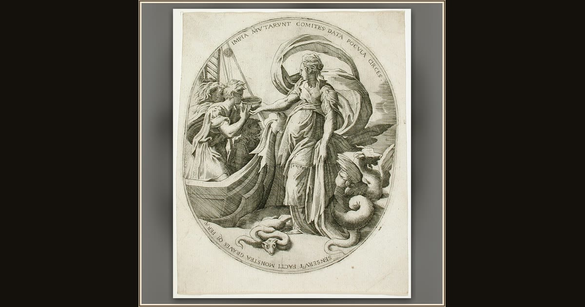

Circe Giving Drink to the Companions of Ulysses
Attributed to Giulio Bonasone, after Parmigianino · c. 1543 · Los Angeles County Museum of Art · Los Angeles, USA
Circe pours her not-so-friendly welcome drink for Ulysses' thirsty crew in this Renaissance engraving after Parmigianino. Explore its place in Book X of the Odyssey.